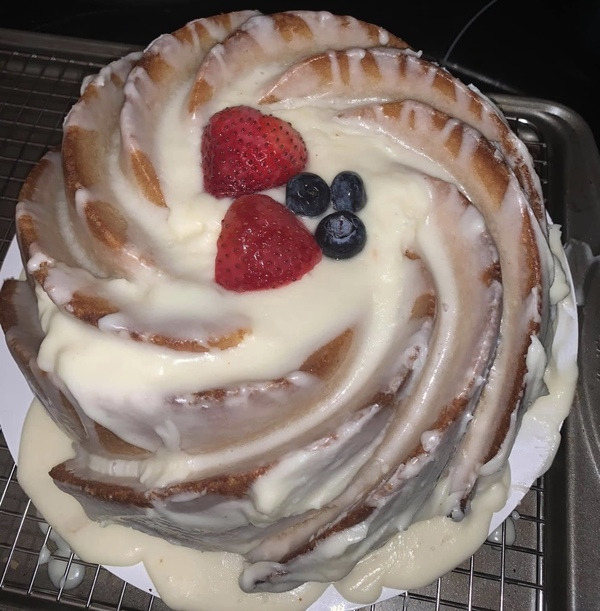
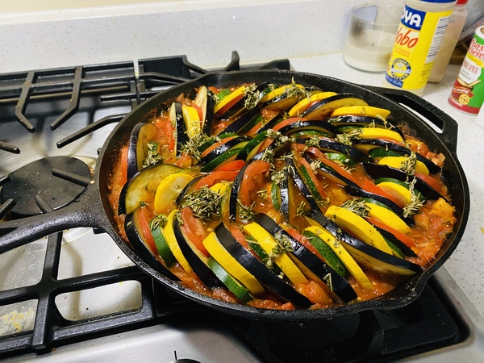
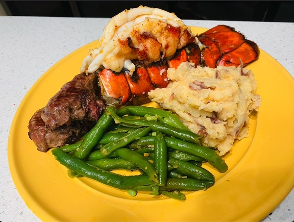
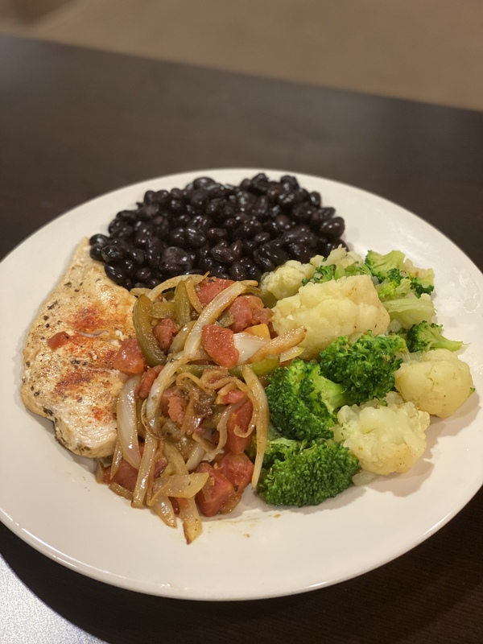

These are pictures of some of my favorite dishes that I have made over the years.

This is a vanilla spice pound cake. I made it for a friend's anniversary.

This is ratatouille, inspired by the movie with the same name. It was my first time having it, but surprisingly good and super easy to make.

This is lobster tail, steak, mashed potatoes, and green beans. This was a dish my spouse and I made together my birthday dinner. Delicious.

This was a simple dish of porkchops, black beans, and vegetables. I eat this style of "slow carbs" when I am trying to eat healthier.